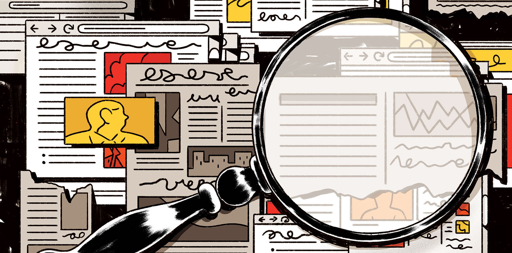

|
Fact
|
The primary and most straightforward way of fact-checking is to simply check if multiple sources agree on the same data or information. If two or more credible references say the same thing, then there is a high chance that the information you found is true.
The more sources saying the same thing, the better the chance it is a fact. (Image taken from Columbia Journalism Review)
There may be instances when the information you found is biased. This may be because the source is opinion-based and not objective or it is exaggerating data to persuade you. Look for biases and check the purpose of the source. If no bias could be found and the purpose is to inform, then the information you found is most probably true.
Biases coud mislead you. Observe and identify the source's purpose. (Image taken from Lattice)
In social media, it can be common for people to impulsively share if they found an article with an intriguing or clickbait title. Unfortunately, this doesn’t mean that it is true. This is called the “Shock-and-Share” cycle, and it leads to the spread of fake news. Be wary if you use these “shocking articles” as reference and make sure to check the content first.
Clickbait titles are a big cause for the spread of fake news. Always read the content before sharing or using. (Image taken from Communicate Influence)
In some instances, we could overlook useful references because of our beliefs. People tend to pay attention to things they believe in and deprioritize other sources. In fact-checking, it is important to be open to all possible sources in order to not be misled. Always try to look from the point-of-view of the other side.
People tend to disregard the information they do not believe in. Be open-minded when fact-checking. (Image taken from Thrive Global)
There is nothing wrong with being too careful when checking your sources and information. Be skeptical during fact-checking. If the info you read seems too good to be true, too weird, or too opinionated, then there's a good chance it is not objectively true.
Meticulous judging is the foundation of good and effective fact-checking. (Image taken from the Australian Tunneling Society)